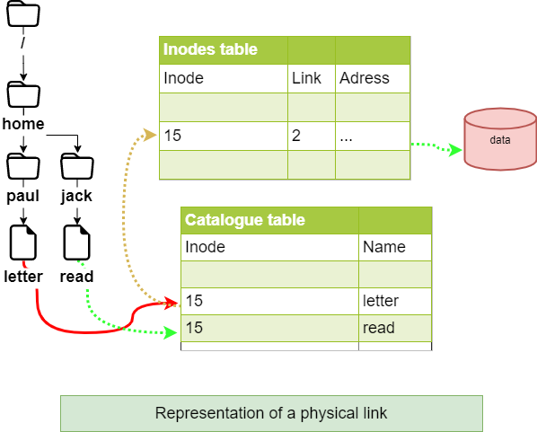
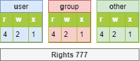

File system¶
In this chapter you will learn how to work with filesystems.
Objectives : In this chapter, future Linux administrators will learn how to:
 manage partitions on disk;
manage partitions on disk;
use LVM for a better use of disk resources;
provide users with a filesystem and manage the access rights.
and also discover:
how the tree structure is organized in Linux;
the different types of files offered and how to work with them;
 hardware, disk, partition, lvm, linux
hardware, disk, partition, lvm, linux
Knowledge: 
Complexity:
Reading time: 20 minutes
Partitioning¶
Partitioning will allow the installation of several operating systems because it is impossible to have several of them cohabit on the same logical drive. Partitioning also allows the separation of data logically (security, access optimization, ...).
The division of the physical disk into partitioned volumes is recorded in the partition table, stored in the first sector of the disk (MBR: Master Boot Record).
The same physical disk can be divided into a maximum of 4 partitions:
- Primary (or main)
- Extended
Warning
There can be only one extended partition per physical disk. In order to benefit from additional drives, the extended partition can be split into logical partitions


The devices are the files identifying the various hardware detected by the motherboard. These files are stored without /dev. The service which detects new devices and gives them names is called udev.
They are identified by their type.
Storage devices are named hd for IDE hard drives and sd for other media. Then comes a letter that starts with a for the first device, then b, c, ...
Finally we will find a number that defines the partitioned volume: 1 for the first primary partition, ...
Warning
Beware, the extended partition, which does not support a file system, still has a number.
There are at least two commands for partitioning a disk: fdisk and cfdisk. Both commands have an interactive menu. cfdisk is more reliable and better optimized, so it is best to use it.
The only reason to use fdisk is when you want to list all logical devices with the -l option.
sudo fdisk -l
sudo fdisk -l /dev/sdc
sudo fdisk -l /dev/sdc2
parted command¶
The parted (partition editor) command is able to partition a disk.
parted [-l] [device]
It also has a recovery function capable of rewriting a deleted partition table.
Under graphical interface, there is the very complete gparted tool: Gnome PARtition EDitor.
The gparted -l command lists all logical devices on a computer.
The gparted command alone will return to an interactive mode with its own internal options:
helpor an incorrect command will display these options.print allin this mode will have the same result asgparted -lon the command line.quitto return to the prompt.
cfdisk command¶
The cfdisk command is used to manage partitions.
cfdisk device
Example:
$ sudo cfdisk /dev/sda
Disk: /dev/sda
Size: 16 GiB, 17179869184 bytes, 33554432 sectors
Label: dos, identifier: 0xcf173747
Device Boot Start End Sectors Size Id Type
>> /dev/sda1 * 2048 2099199 2097152 1G 83 Linux
/dev/sda2 2099200 33554431 31455232 15G 8e Linux LVM
lqqqqqqqqqqqqqqqqqqqqqqqqqqqqqqqqqqqqqqqqqqqqqqqqqqqqqqqqqqqqqqqqqqqqqqqqqqqqk
x Partition type: Linux (83) x
x Attributes: 80 x
xFilesystem UUID: 54a1f5a7-b8fa-4747-a87c-2dd635914d60 x
x Filesystem: xfs x
x Mountpoint: /boot (mounted) x
mqqqqqqqqqqqqqqqqqqqqqqqqqqqqqqqqqqqqqqqqqqqqqqqqqqqqqqqqqqqqqqqqqqqqqqqqqqqqj
[Bootable] [ Delete ] [ Resize ] [ Quit ] [ Type ] [ Help ]
[ Write ] [ Dump ]
The preparation, without LVM, of the physical media goes through five steps:
- Setting up the physical disk;
- Partitioning of the volumes (geographical division of the disk, possibility of installing several systems, ...);
- Creation of the file systems (allows the operating system to manage the files, the tree structure, the rights, ...);
- Mounting of file systems (registration of the file system in the tree structure);
- Manage user access.
Logical Volume Manager (LVM)¶
Logical Volume Manager (LVM])
Volume management creates an abstract layer on top of physical storage, offering advantages over using physical storage directly:
- More flexible disk capacity;
- Online data movement;
- Disks in stripe mode;
- Mirrored volumes (recopy);
- Volume snapshots (snapshot).
The disadvantage is that if one of the physical volumes becomes out of order, then all the logical volumes that use this physical volume are lost. You will have to use LVM on raid disks.
LVM is available under Linux from kernel version 2.4.
Note
LVM is only managed by the operating system. Therefore the BIOS needs at least one partition without LVM to boot.
Volume groups¶
The physical volumes PV Physical Volumes (from partitions) are combined into volume groups VG. Each VG represents disk space that can be partitioned into LV Logical Volumes. Extension is the smallest unit of fixed-size space that can be allocated.
- PE : Physical Extension
- LE : Logical Extension

Logical volumes¶
A volume group, VG, is divided into logical volumes, LV, offering different operating modes:
- Linear volumes;
- Volumes in stripe mode;
- Mirrored volumes.


Tip
Striping_ improves performance by writing data to a predetermined number of physical volumes with a round-robin technique.

LVM commands for volume management¶
pvcreate command¶
The pvcreate command is used to create physical volumes. It turns Linux partitions (or disks) into physical volumes.
pvcreate [-options] partition
Example:
[root]# pvcreate /dev/hdb1
pvcreate -- physical volume « /dev/hdb1 » successfully created
You can also use a whole disk (which facilitates disk size increases in virtual environments for example).
[root]# pvcreate /dev/hdb
pvcreate -- physical volume « /dev/hdb » successfully created
| Option | Description |
|---|---|
-f |
Forces the creation of the volume (disk already transformed into physical volume). |
vgcreate command¶
The vgcreate command is used to create volume groups. It groups one or more physical volumes into a volume group.
vgcreate volume physical_volume [PV...]
Example:
[root]# vgcreate volume1 /dev/hdb1
…
vgcreate – volume group « volume1 » successfully created and activated
lvcreate command¶
The lvcreate command creates logical volumes. The file system is then created on these logical volumes.
lvcreate -L size [-n name] VG_name
Example:
[root]# lvcreate –L 600M –n VolLog1 volume1
lvcreate -- logical volume « /dev/volume1/VolLog1 » successfully created
| Option | Description |
|---|---|
-L size |
Logical volume size in K, M or G. |
-n name |
LV name. Special file created in /dev/name_volume with this name. |
LVM commands to view volume information¶
pvdisplay command¶
The pvdisplay command allows you to view information about the physical volumes.
pvdisplay /dev/PV_name
Example:
[root]# pvdisplay /dev/PV_name
vgdisplay command¶
The vgdisplay command allows you to view information about volume groups.
vgdisplay VG_name
Example:
[root]# vgdisplay volume1
lvdisplay command¶
The lvdisplay command allows you to view information about the logical volumes.
lvdisplay /dev/VG_name/LV_name
Example:
[root]# lvdisplay /dev/volume1/VolLog1
Preparation of the physical media¶
The preparation with LVM of the physical support is broken down as follows:
- Setting up the physical disk
- Partitioning of the volumes
- LVM physical volume
- LVM volume groups
- LVM logical volumes
- Creating file systems
- Mounting file systems
- Manage user access
Structure of a file system¶
A file system FS is in charge of the following actions:
- Securing access and modification rights to files;
- Manipulating files: create, read, modify and delete;
- Locating files on the disk;
- Managing partition space.
The Linux operating system is able to use different file systems (ext2, ext3, ext4, FAT16, FAT32, NTFS, HFS, BtrFS, JFS, XFS, ...).
mkfs command¶
The mkfs command allows you to create a Linux file system.
mkfs [-t fstype] filesys
Example:
[root]# mkfs -t ext4 /dev/sda1
| Option | Description |
|---|---|
-t |
Indicates the type of file system to use. |
Warning
Without a file system it is not possible to use the disk space.
Each file system has a structure which is identical on each partition. A boot block and a super block initialized by the system and then an inode table and a data area initialized by the administrator.
Note
The only exception is the swap partition.
Boot block¶
The boot block occupies the first block on the disk and is present on all partitions. It contains the program that starts and initializes the system and is therefore only filled in for the boot partition.
Super block¶
The size of the super block table is defined at creation. It is present on each partition and contains the elements necessary for its utilization.
It describes the File System:
- Name of the Logical Volume;
- Name of the File System;
- Type of the File System;
- File System Status;
- Size of the File System;
- Number of free blocks;
- Pointer to the beginning of the list of free blocks;
- Size of the inode list;
- Number and list of free inodes.
A copy is loaded in the central memory as soon as the system is initialized. This copy is updated as soon as it is modified and the system saves it periodically (command sync).
When the system stops, it also copies this table in memory to its block.
Table of inodes¶
The size of the inode table is defined at its creation and is stored on the partition. It consists of records, called inodes, corresponding to the files created. Each record contains the addresses of the data blocks making up the file.
Note
An inode number is unique within a file system.
A copy is loaded in the central memory as soon as the system is initialized. This copy is updated as soon as it is modified and the system saves it periodically (command sync).
When the system stops, it also copies this table in memory to its block.
A file is managed by its inode number.
Note
The size of the inode table determines the maximum number of files the FS can contain.
Information present in the inode table :
- Inode number;
- File type and access permissions;
- Owner identification number;
- Identification number of the owner group;
- Number of links on this file;
- Size of the file in bytes;
- Date the file was last accessed;
- Date the file was last modified;
- Date of the last modification of the inode (= creation);
- Table of several pointers (block table) to the logical blocks containing the pieces of the file.
Data area¶
Its size corresponds to the rest of the available space of the partition. This area contains the catalogs corresponding to each directory and the data blocks corresponding to the contents of the files.
In order to guarantee the consistency of the file system, an image of the superblock and the inode table is loaded into memory (RAM) when the operating system is loaded so that all I/O operations are done through these system tables. When the user creates or modifies files, this memory image is updated first. The operating system must therefore regularly update the superblock of the logical disk (sync command).
These tables are written to the hard disk when the system is shut down.
Danger
In the event of a sudden stop, the file system may lose its consistency and cause data loss.
Repairing the file system¶
It is possible to check the consistency of a file system with the fsck command.
In case of errors, solutions are proposed to repair the inconsistencies. After repair, files that remain without entries in the inode table are attached to the /lost+found folder of the logical drive.
fsck command¶
The fsck command is a console-mode integrity check and repair tool for Linux file systems.
fsck [-sACVRTNP] [ -t fstype ] filesys
Example:
[root]# fsck /dev/sda1
To check the root partition, it is possible to create a forcefsck file and reboot or run shutdown with the -F option.
[root]# touch /forcefsck
[root]# reboot
or
[root]# shutdown –r -F now
Warning
The partition to be checked must be unmounted.
Organization of a file system¶
By definition, a File System is a tree structure of directories built from a root directory (a logical device can only contain one file system).

Note
In Linux everything is a file.
Text document, directory, binary, partition, network resource, screen, keyboard, Unix kernel, user program, ...
Linux meets the FHS (Filesystems Hierarchy Standard) (see man hier) which defines the names of folders and their roles.
| Directory | Observation | Abbreviation of |
|---|---|---|
/ |
Contains special directories | |
/boot |
Files related to system startup | |
/sbin |
Commands necessary for system startup and repair | system binaries |
/bin |
Executables of basic system commands | binaries |
/usr/bin |
System administration commands | |
/lib |
Shared libraries and kernel modules | libraries |
/usr |
Everything that is not necessary for minimal system operation | UNIX System Resources |
/mnt |
For mounting temporary SF | mount |
/media |
For mounting removable media | |
/root |
Administrator's login directory | |
/home |
User data | |
/tmp |
Temporary files | temporary |
/dev |
Special device files | device |
/etc |
Configuration and script files | editable text configuration |
/opt |
Specific to installed applications | optional |
/proc |
Virtual file system representing different processes | processes |
/var |
Miscellaneous variable files | variables |
- To perform a mount or unmount, at the tree level, you must not be under its mount point.
- Mounting on a non-empty directory does not delete the content. It is only hidden.
- Only the administrator can perform mounts.
- Mount points to be automatically mounted at boot time must be entered in
/etc/fstab.
/etc/fstab file¶
The /etc/fstab file is read at system startup and contains the mounts to be performed. Each file system to be mounted is described on a single line, the fields being separated by spaces or tabs.
Note
Lines are read sequentially (fsck, mount, umount).
/dev/mapper/VolGroup-lv_root / ext4 defaults 1 1
UUID=46….92 /boot ext4 defaults 1 2
/dev/mapper/VolGroup-lv_swap swap swap defaults 0 0
tmpfs /dev/shm tmpfs defaults 0 0
devpts /dev/pts devpts gid=5,mode=620 0 0
sysfs /sys sysfs defaults 0 0
proc /proc proc defaults 0 0
1 2 3 4 5 6
| Column | Description |
|---|---|
| 1 | File system device (/dev/sda1, UUID=..., ...) |
| 2 | Mount point name, absolute path (except swap) |
| 3 | Filesystem type (ext4, swap, ...) |
| 4 | Special options for mounting (defaults, ro, ...) |
| 5 | Enable or disable backup management (0:not backed up, 1:backed up) |
| 6 | Check order when checking the SF with the fsck command (0:no check, 1:priority, 2:not priority) |
The mount -a command allows new mounts to be taken into account without rebooting.
They are then written to the /etc/mtab file which contains the current mounts.
Warning
Only the mount points listed in /etc/fstab will be mounted on reboot.
It is possible to make a copy of the /etc/mtab file or to copy its contents to /etc/fstab.
Mount management commands¶
mount command¶
The mount command allows you to mount and view the logical drives in the tree.
mount [-option] [device] [directory]
Example:
[root]# mount /dev/sda7 /home
| Option | Description |
|---|---|
-n |
Mount without writing to /etc/mtab. |
-t |
To indicate the type of file system to use. |
-a |
Mounts all filesystems mentioned in /etc/fstab. |
-r |
Mounts the file system read-only (equivalent to -o ro). |
-w |
Mounts the file system read/write, by default (equivalent -o rw). |
-o |
Argument followed by a comma-separated list of options (remount, ro, ...). |
Note
The mount command alone displays all mounted file systems.
umount command¶
The umount command is used to unmount logical drives.
umount [-option] [device] [directory]
Example:
[root]# umount /home
[root]# umount /dev/sda7
| Option | Description |
|---|---|
-n |
Unmount without writing to /etc/mtab. |
-r |
If unmount fails, remount as read-only. |
-f |
Force unmount. |
-a |
Unmount all filesystems mentioned in /etc/fstab. |
Note
When disassembling, you must not stay below the mounting point. Otherwise, the following error message is displayed: device is busy.
Types of files¶
As in any system, in order to be able to find one's way through the tree structure and the file management, it is important to respect the file naming rules.
- Files are coded on 255 characters;
- All ASCII characters can be used;
- Uppercase and lowercase letters are differentiated;
- No notion of extension.
Groups of words separated by spaces must be enclosed in quotation marks:
[root]# mkdir "working dir"
Note
While there is nothing technically wrong with creating a file or directory with a space in it, it is generally a "best practice" to avoid this and replace any space with an underscore.
Note
The . at the beginning of the file name only serves to hide it from a simple ls.
Warning
Under Linux, the extension of a file is not a necessary reference to open or modify it. However, it can be useful for the user.
Examples of extension agreements:
.c: source file in C language;.h: C and Fortran header file;.o: object file in C language;.tar: data file archived with thetarutility;.cpio: data file archived with thecpioutility;.gz: data file compressed with thegziputility;.tgz: data file archived with thetarutility and compressed with thegziputility;.html: web page.
Details of a file name¶
[root]# ls -liah /usr/bin/passwd
266037 -rwsr-xr-x 1 root root 59K mars 22 2019 /usr/bin/passwd
1 2 3 4 5 6 7 8 9
| Row | Description |
|---|---|
1 |
Inode number |
2 |
File type (1st character of the block of 10) |
3 |
Access rights (last 9 characters of the block of 10) |
4 |
Number of links (ordinary) or subdirectories (directories) |
5 |
Name of the owner |
6 |
Name of the group |
7 |
Size (byte, kilo, mega) |
8 |
Date of last update |
9 |
Name of the file |
Different types of files¶
The following types of files can be found on a system:
- Ordinary (text, binary, ...);
- Directories;
- Special (printers, screens, ...);
- Links;
- Communications (tubes and socket).
Ordinary files¶
These are text, program (source), executable (after compilation) or data (binary, ASCII) and multimedia files.
[root]# ls -l myfile
-rwxr-xr-x 1 root root 26 nov 31 15:21 myfile
The dash - at the beginning of the rights group (10-character block) indicates that it is an ordinary file type.
Directory files¶
Directory files contain references to other files.
By default in each directory are present . and ...
- The . represents the position in the tree.
- The .. represents the father of the current position.
[root]# ls -l mydirectory
drwxr-xr-x 1 root root 26 nov 31 15:21 mydirectory
The letter d at the beginning of the rights group indicates that it is a directory type file.
Special files¶
In order to communicate with peripherals (hard disks, printers, ...), Linux uses interface files called special files (device file or special file). They allow identification by the peripherals.
These files are special because they do not contain data but specify the access mode to communicate with the device.
They are defined in two modes:
- block mode;
- character mode.
Block mode¶
The special block mode file allows, using the system buffers, to transfer data to the device.
[root]# ls -l /dev/sda
brw------- 1 root root 8, 0 jan 1 1970 /dev/sda
The letter b at the beginning of the rights group indicates that it is a special file block.
Character mode¶
The special character mode file is used to transfer data to the device as a stream of one character at a time without using a buffer. These are devices like printer, screen or DAT tapes, ...
The standard output is the screen.
[root]# ls -l /dev/tty0
crw------- 1 root root 8, 0 jan 1 1970 /dev/tty0
The letter c at the beginning of the rights group indicates that it is a special character file.
Communication files¶
These are the pipe (pipes) and the socket files.
-
Pipe files pass information between processes by FIFO (First In, First Out). One process writes transient information to a pipe file and another reads it. After reading, the information is no longer accessible.
-
Socket files allow bidirectional inter-process communication (on local or remote systems). They use an inode of the file system.
Link files¶
These files give the possibility to give several logical names to the same physical file. A new access point to the file is therefore created.
There are two types of link files:
- Physical links;
- Symbolic links.
Physical link¶
The link file and the source file have the same inode number and the link counter is incremented. It is not possible to link different directories or files from different file systems.
Warning
If the source file is destroyed, the counter is decremented and the link file still accesses the file.
Command ln for a physical link¶
The ln command allows you to create physical links.
[root]# ls –li letter
666 –rwxr--r-- 1 root root … letter
[root]# ln /home/paul/letter /home/jack/read
[root]# ls –li /home/*/*
666 –rwxr--r-- 2 root root … letter
666 –rwxr--r-- 2 root root … read

Symbolic link¶
Unlike the physical link, the symbolic link involves the creation of a new inode. At the symbolic link level, only a path is stored in the inode table.
The file created contains only an indication of the path to the file. This notion no longer has the limitations of physical links and it is now possible to link directories and files belonging to different file systems.
Warning
If the source file is destroyed, the link file can no longer access the file.
ln command for a symbolic link¶
The command ln with the argument -s allows to create symbolic links.
[root]# ls –li letter
666 -rwxr--r-- 1 root root … letter
[root]# ln -s /home/paul/letter /tmp/read
[root]# ls –li /home/paul/letter /tmp/read
666 -rwxr--r--- 1 root root … letter
678 lrwxrwxrwx 1 root root … read -> letter
File attributes¶
Linux is a multi-user operating system where the control of access to files is essential.
These controls are functions of:
- file access permissions ;
- users (ugo Users Groups Others).
The command ls -l allows to display the attributes.
There are 4 file access rights:
- read;
- write;
- execution;
- - no right.
Warning
The rights associated with files differ from those associated with directories (see below).
The user types associated with file access rights are:
- user_ (owner) ;
- group_ (owner group);
- others (others users);
In some commands it is possible to designate everyone with a (all).
a = ugo
Rights associated with ordinary files¶
- read: Allows reading a file (
cat,less, ...) and copying a file (cp, ...). - write: Allows modification of the file content (
cat,>>,vim, ...). - execute: Considers the file as an eXecutable (binary or script).
- -: No permissions.
Note
Moving or renaming a file depends on the rights of the target directory. Deleting a file depends on the rights of the parent directory.
Rights associated with directories¶
- read: Allows reading the contents of a directory (
ls -R). - write: Allows modification of the contents of a directory (
touch) and allows creation and deletion of files if the x permission is enabled. - execute: Allows descending in the directory (
cd). - -: No rights.
Attribute management¶
The display of rights is done with the command ls -l. It is the last 9 characters of the block of 10. More precisely 3 times 3 characters.
[root]# ls -l /tmp/myfile
-rwxrw-r-x 1 root sys ... /tmp/myfile
1 2 3 4 5
| Row | Description |
|---|---|
| 1 | Owner (user) permissions, here rwx |
| 2 | Owner group permissions (group), here rw- |
| 3 | Other users' permissions (others), here r-x |
| 4 | File owner |
| 5 | Group owner of the file |
Note
Permissions apply to user, group and other (ugo) depending on the owner and group.
By default, the owner of a file is the one who creates it. The group of the file is the group of the owner who created the file. The others are those which are not concerned by the previous cases.
The attributes are changed with the chmod command.
Only the administrator and the owner of a file can change the rights of a file.
chmod command¶
The chmod command allows you to change the access permissions to a file.
chmod [option] mode file
The mode indication can be an octal representation (e.g. 744) or a symbolic representation ([ugoa][+=-][rwxst]).
Several symbolic operations can be separated by commas
Example:
[root]# chmod -R u+rwx,g+wx,o-r /tmp/file1
[root]# chmod g=x,o-r /tmp/file2
[root]# chmod -R o=r /tmp/file3
[root]# ls -l /tmp/fic*
-rwxrwx--- 1 root root … /tmp/file1
-rwx--x--- 1 root root … /tmp/file2
-rwx--xr-- 1 root root … /tmp/file3
[root]# chmod 741 /tmp/file1
[root]# chmod -R 744 /tmp/file2
[root]# ls -l /tmp/fic*
-rwxr----x 1 root root … /tmp/file1
-rwxr--r-- 1 root root … /tmp/file2
| Option | Observation |
|---|---|
-R |
Recursively modify the permissions of directories and their contents. |
There are two methods for making rights changes:
- The octal method;
- The symbolic method.
Warning
The rights of files and directories are not dissociated. For some operations, it will be necessary to know the rights of the directory containing the file. A write-protected file can be deleted by another user as long as the rights of the directory containing it allow this user to perform this operation.
Principle of the octal method¶
Each right has a value.

[root]# ls -l /tmp/myfile
-rwxrwxrwx 1 root root ... /tmp/myfile

[root]# chmod 741 /tmp/myfile
-rwxr----x 1 root root ... /tmp/myfile

Principle of the symbolic method¶
This method can be considered as a "literal" association between a user type, an operator, and rights.

[root]# chmod u+rwx,g+wx,o-r /tmp/myfile
[root]# chmod g=x,o-r /tmp/myfile
[root]# chmod o=r /tmp/myfile
[root]# ls -l /tmp/myfile
r--r-- 1 root root … /tmp/myfile
[root]# chmod u+rwx,g+wx,o-r /tmp/myfile
[root]# ls -l /tmp/myfile
-rwxrwx--- 1 root root … /tmp/myfile
Special rights¶
In addition to the fundamental rights (rwx), there are the particular rights:
- set-user-ID (SUID])
- set-group-ID (SGID])
- sticky-bit
As with the fundamental rights, the particular rights each have a value. This value is placed before the ugo set of rights.
Danger
S, S and T in capital letters if the right does not exist.
The sticky-bit¶
One of the peculiarities of rights in Linux is that the right to write to a directory also allows deletion of all files, owner or not.
The sticky-bit set on the directory will only allow users to delete files they own. This is the basic case for the /tmp directory.
The setting of the sticky-bit can be done as follows:
Octal method:
[root]# chmod 1777 directory
Symbolic method:
[root]# chmod o+t directory
Verification:
[root]# ls -l
drwxrwxrwt … directory
SUID and SGID on a command¶
These rights allow execution of a command according to the rights set on the command, and not according to the user's rights.
The command is executed with the identity of the owner (SUID) or the group (SGID) of the command.
Note
The identity of the user requesting the execution of the order is no longer taken into account.
This is an additional possibility of access rights assigned to a user when it is necessary for them to have the same rights as the owner of a file or those of the group concerned.
Indeed, a user may have to run a program (usually a system utility) but not have the necessary access rights. By setting the appropriate rights (s at the owner level and/or at the group level), the user of the program has, for the time of its execution, the identity of the owner (or that of the group) of the program.
Example:
The file /usr/bin/passwd is an executable file (a command) with a SUID.
When the user bob runs it, he will have to access the /etc/shadow file, but the permissions on this file do not allow bob to access it.
Having a SUID this command, /usr/bin/passwd, will be executed with the UID of root and the GID of root. The latter being the owner of the /etc/shadow file, he will have read rights.

The setting of SUID and SGID can be done as below with the command chmod:
Octal method:
[root]# chmod 4777 command1
[root]# chmod 2777 command2
Symbolic method:
[root]# chmod u+s command1
[root]# chmod g+s command2
Verification:
[root]# ls -l
-rwsrwxrwx … command1
-rwxrwsrwx … command2
Warning
It is not possible to pass the SUID or SGID to a shell script. The system does not allow it because it is too dangerous for security!
SGID on a file¶
In a directory with the SGID right, any file created will inherit the group that owns the directory instead of that of the creating user.
Example:
[rockstar] $ ls -ld /data/
drwxrwsr-x 2 root users 4096 26 oct. 19:43 /data
[rockstar] $ touch /data/test_sgid /tmp/fic_reference
[rockstar] $ ls -ld /data/test_sgid /tmp/fic_reference
-rw-r--r--. 1 rockstar users 0 26 oct. 19:43 /data/test_sgid <1>
-rw-r--r--. 1 rockstar rockstar 0 26 oct. 19:43 /tmp/fic_ref
<1> The test_sgid file inherits the group owner of its /data folder (in this case users) whatever the main group of the rockstar user is.
Default rights and mask¶
When a file or directory is created, it already has permissions.
- For a directory:
rwxr-xr-xor 755. - For a file:
rw-r-r-or 644.
This behavior is defined by the default mask.
The principle is to remove the value defined by the mask at maximum rights without the execution right.
For a directory :

For a file, the execution rights are removed:

umask command¶
The umask command allows you to display and modify the mask.
umask [option] [mode]
Example:
$ umask 033
$ umask
0033
$ umask -S
u=rwx,g=r,o=r
$ touch umask_033
$ ls -la umask_033
-rw-r--r-- 1 rockstar rockstar 0 nov. 4 16:44 umask_033
$ umask 025
$ umask -S
u=rwx,g=rx,o=w
$ touch umask_025
$ ls -la umask_025
-rw-r---w- 1 rockstar rockstar 0 nov. 4 16:44 umask_025
| Option | Description |
|---|---|
-S |
Symbolic display of file rights. |
Warning
umask does not affect existing files.
Note
umask modifies the mask until the disconnection.
To keep the value, you have to modify the following profile files: For all users:
/etc/profile/etc/bashrc
For a particular user:
~/.bashrc
Warning
umask -S displays the file rights (without the execute right) of the files that will be created. So it is not the display of the mask used to subtract the maximum value.
Tip
The umask command being a bash command, (a type umask returns umask is a shell primitive) you have to search umask in man bash.